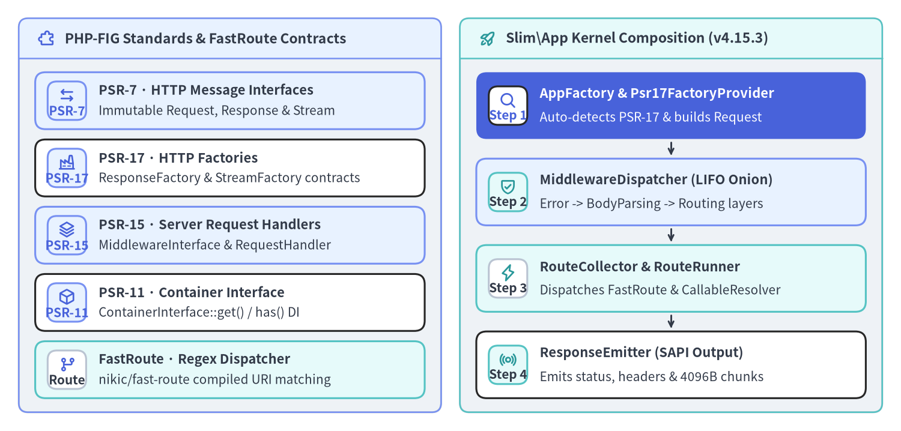
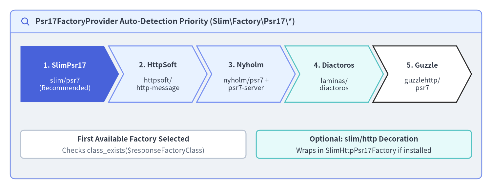

Why Slim 4 & PSR Standards
Slim Framework (v4.15.3) is a lightweight, standards-first PHP micro-framework designed around PHP-FIG PSR interfaces rather than a monolithic, vendor-locked stack. Instead of forcing proprietary HTTP request wrappers, custom service locators, or tightly coupled ORM layers onto your application, Slim 4 unifies PSR-7 HTTP message streams, PSR-15 concentric middleware and request handlers, PSR-17 HTTP factories, PSR-11 dependency injection containers, and Nikic FastRoute regular-expression routing into a cohesive 3,149-line micro-kernel.

Source Code
from drawlib.canvas import save, setup
from drawlib.icons import phosphor
from drawlib.smartarts import CardList, Panel
from drawlib.styles import Colors, Styles
setup(width=192, height=92, dpi=150)
p_left = Panel(
"PHP-FIG Standards & FastRoute Contracts",
style=Styles.Neutral.patch(shape_r=2.0),
header_style=Styles.PrimaryNeutral.patch(shape_line_width=1.2),
text_style=Styles.DarkBold.patch(text_size=11.0),
icon=phosphor.puzzle_piece,
icon_style=Styles.PrimaryBold,
header_variant="filled",
header_height=8.5,
)
p_left.draw((4.0, 4.0), width=90.0, height=84.0)
lx, lw, lh = p_left.get_content_box((4.0, 4.0), width=90.0, height=84.0, padding=(3.5, 3.0))
cl_left = CardList(
style=Styles.White,
text_style=Styles.DarkBold.patch(text_size=10.5),
description_style=Styles.Dark.patch(text_size=10.0),
badge_shape="rounded_rect",
badge_style=Styles.PrimaryNeutral,
badge_text_style=Styles.PrimaryBold.patch(text_size=10.0),
icon_style=Styles.PrimaryBold,
direction="vertical",
spacing=2.2,
)
cl_left.add(
"PSR-7 · HTTP Message Interfaces",
"Immutable Request, Response & Stream",
badge_text="PSR-7",
icon=phosphor.arrows_left_right,
style=Styles.PrimaryNeutral,
)
cl_left.add(
"PSR-17 · HTTP Factories",
"ResponseFactory & StreamFactory contracts",
badge_text="PSR-17",
icon=phosphor.factory,
)
cl_left.add(
"PSR-15 · Server Request Handlers",
"MiddlewareInterface & RequestHandler",
badge_text="PSR-15",
icon=phosphor.stack,
style=Styles.PrimaryNeutral,
)
cl_left.add(
"PSR-11 · Container Interface",
"ContainerInterface::get() / has() DI",
badge_text="PSR-11",
icon=phosphor.cube,
)
cl_left.add(
"FastRoute · Regex Dispatcher",
"nikic/fast-route compiled URI matching",
badge_text="Route",
icon=phosphor.git_branch,
style=Styles.SecondaryNeutral,
badge_style=Styles.White.patch(shape_line_color=Colors.Gray4),
badge_text_style=Styles.DarkBold.patch(text_size=10.0),
)
cl_left.draw(xy=lx, width=lw, height=lh)
p_right = Panel(
"Slim\\App Kernel Composition (v4.15.3)",
style=Styles.Neutral.patch(shape_r=2.0),
header_style=Styles.SecondaryNeutral.patch(shape_line_width=1.2),
text_style=Styles.DarkBold.patch(text_size=11.0),
icon=phosphor.rocket_launch,
icon_style=Styles.SecondaryBold,
header_variant="filled",
header_height=8.5,
)
p_right.draw((98.0, 4.0), width=90.0, height=84.0)
rx, rw, rh = p_right.get_content_box((98.0, 4.0), width=90.0, height=84.0, padding=(3.5, 3.0))
cl_right = CardList(
style=Styles.White,
text_style=Styles.DarkBold.patch(text_size=10.5),
description_style=Styles.Dark.patch(text_size=10.0),
badge_shape="rounded_rect",
badge_style=Styles.SecondaryNeutral,
badge_text_style=Styles.DarkBold.patch(text_size=10.0),
icon_style=Styles.SecondaryBold,
direction="vertical",
spacing=2.8,
show_arrows=True,
arrow_style=Styles.DarkBold.patch(line_arrow_head_scale=10, line_width=1.4),
)
cl_right.add(
"AppFactory & Psr17FactoryProvider",
"Auto-detects PSR-17 & builds Request",
badge_text="Step 1",
icon=phosphor.magnifying_glass,
style=Styles.PrimaryFlat,
text_style=Styles.WhiteBold.patch(text_size=10.5),
description_style=Styles.White.patch(text_size=10.0),
badge_style=Styles.White,
badge_text_style=Styles.PrimaryBold.patch(text_size=10.0),
icon_style=Styles.PrimaryBold,
)
cl_right.add(
"MiddlewareDispatcher (LIFO Onion)",
"Error -> BodyParsing -> Routing layers",
badge_text="Step 2",
icon=phosphor.shield_check,
style=Styles.PrimaryNeutral,
)
cl_right.add(
"RouteCollector & RouteRunner",
"Dispatches FastRoute & CallableResolver",
badge_text="Step 3",
icon=phosphor.lightning,
style=Styles.SecondaryNeutral,
badge_style=Styles.White.patch(shape_line_color=Colors.Gray4),
badge_text_style=Styles.DarkBold.patch(text_size=10.0),
)
cl_right.add(
"ResponseEmitter (SAPI Output)",
"Emits status, headers & 4096B chunks",
badge_text="Step 4",
icon=phosphor.broadcast,
)
cl_right.draw(xy=rx, width=rw, height=rh)
save()
Architectural Philosophy: Composition Over Monolithic Lock-In
In earlier generations of PHP frameworks (including Slim 3), the framework bundled its own dependency injection container (Pimple) and its own concrete HTTP message implementation. While convenient for small scripts, this coupling prevented teams from sharing middlewares across frameworks, upgrading container implementations, or swapping in lighter PSR-7 engines for high-throughput microservices.
Slim 4 completely inverted this dependency model: Slim\App depends exclusively on PHP-FIG interfaces (Psr\*) and nikic/fast-route. Every component you write—whether an authentication middleware, a validation guard, or an invokable controller—adheres to standard interfaces that work across any PSR-15 / PSR-7 stack.
| Standard / Package | Composer Contract | Key Interfaces | Slim v4.15.3 Integration Classes |
|---|---|---|---|
| PSR-7 (HTTP Message) | psr/http-message (^1.1 || ^2.0) |
ServerRequestInterface, ResponseInterface, StreamInterface, UriInterface |
Consumed by App::handle(), ResponseEmitter, BodyParsingMiddleware, and all route strategies |
| PSR-15 (Server Handlers) | psr/http-server-handler & psr/http-server-middleware (^1.0) |
RequestHandlerInterface, MiddlewareInterface |
Slim\App, Slim\MiddlewareDispatcher, Slim\Routing\RouteRunner, Slim\Routing\Route |
| PSR-17 (HTTP Factories) | psr/http-factory (^1.1) |
ResponseFactoryInterface, StreamFactoryInterface, ServerRequestFactoryInterface |
Slim\Factory\AppFactory, Slim\Factory\Psr17\Psr17FactoryProvider |
| PSR-11 (DI Container) | psr/container (^1.0 || ^2.0) |
ContainerInterface (get(), has()) |
AppFactory::createFromContainer(), Slim\CallableResolver |
| PSR-3 (Logger Interface) | psr/log (^1.1 || ^2.0 || ^3.0) |
LoggerInterface |
Slim\Logger, Slim\Middleware\ErrorMiddleware, Slim\Handlers\ErrorHandler |
| FastRoute (URI Router) | nikic/fast-route (^1.3) |
FastRoute\Dispatcher, FastRoute\RouteParser |
Slim\Routing\RouteCollector, RouteResolver, FastRouteDispatcher |
PSR-7 Immutable HTTP Messages
PSR-7 models HTTP requests and responses as immutable value objects backed by streamable bodies (Psr\Http\Message\StreamInterface). Whenever you call a mutator such as $request->withAttribute('user', $user) or $response->withHeader('Content-Type', 'application/json')->withStatus(201), the method clones the message state and returns a new instance without mutating the original reference.
Immutability eliminates a common class of bugs in middleware pipelines where an upstream filter accidentally corrupts headers or request attributes relied upon by downstream audit loggers or error handlers. Because writing to the body appends bytes to an underlying php://temp stream (StreamInterface::write()), the stream resource itself is shared while headers, status codes, parsed body data, and request attributes remain strictly copy-on-write:
<?php
declare(strict_types=1);
use Psr\Http\Message\ResponseInterface as Response;
use Psr\Http\Message\ServerRequestInterface as Request;
$app->post('/api/v1/orders', function (Request $request, Response $response): Response {
// Read PSR-7 headers, query params, and parsed body (populated by BodyParsingMiddleware)
$idempotencyKey = $request->getHeaderLine('X-Idempotency-Key');
$data = (array) $request->getParsedBody();
// Write serialized JSON into the PSR-7 StreamInterface
$payload = json_encode([
'order_id' => 'ord_94810',
'idempotency_key' => $idempotencyKey,
'items_count' => count($data['items'] ?? []),
], JSON_THROW_ON_ERROR);
$response->getBody()->write($payload);
// Every with* method returns a new immutable ResponseInterface clone
return $response
->withStatus(201)
->withHeader('Content-Type', 'application/json')
->withHeader('Cache-Control', 'no-store');
});
PSR-15 Request Handlers and Concentric LIFO Middleware
PSR-15 standardizes two complementary contracts that form the backbone of Slim 4:
Psr\Http\Server\RequestHandlerInterface: Exposes a single method,handle(ServerRequestInterface $request): ResponseInterface. BothSlim\App,Slim\Routing\RouteRunner, andSlim\Routing\RouteimplementRequestHandlerInterface.Psr\Http\Server\MiddlewareInterface: Exposesprocess(ServerRequestInterface $request, RequestHandlerInterface $handler): ResponseInterface. A middleware inspects or transforms the incoming$request, optionally delegates to$handler->handle($request)to invoke the next inner layer, and inspects or transforms the returned$response.
In Slim\MiddlewareDispatcher, calling $app->add($middleware) wraps the current stack tip ($this->tip, initially seeded with RouteRunner) inside a new outer RequestHandlerInterface node. Consequently, middlewares execute in Last-In, First-Out (LIFO) concentric order: the last middleware added via $app->add() executes first on the inbound request and last on the outbound response:
<?php
declare(strict_types=1);
namespace App\Middleware;
use Psr\Http\Message\ResponseInterface;
use Psr\Http\Message\ServerRequestInterface;
use Psr\Http\Server\MiddlewareInterface;
use Psr\Http\Server\RequestHandlerInterface;
final class RequestTimingMiddleware implements MiddlewareInterface
{
public function process(ServerRequestInterface $request, RequestHandlerInterface $handler): ResponseInterface
{
$startTime = hrtime(true);
// Pass control inward to the next PSR-15 layer
$response = $handler->handle($request);
// Measure elapsed milliseconds on the outbound pass
$elapsedMs = (hrtime(true) - $startTime) / 1_000_000;
return $response->withHeader('X-Response-Time-Ms', sprintf('%.2f', $elapsedMs));
}
}
PSR-17 HTTP Factories & Auto-Discovery
Because Slim 4 does not hardcode a concrete PSR-7 library, it uses PSR-17 (psr/http-factory) to instantiate blank ResponseInterface objects (ResponseFactoryInterface::createResponse()) and uses ServerRequestCreatorInterface to construct ServerRequestInterface instances from PHP superglobals ($_SERVER, $_COOKIE, $_GET, $_POST, $_FILES).
When you call AppFactory::create() without arguments, AppFactory::determineResponseFactory() and ServerRequestCreatorFactory::determineServerRequestCreator() iterate through Slim\Factory\Psr17\Psr17FactoryProvider::$factories in a deterministic 5-tier priority order:

Source Code
from drawlib.canvas import save, setup
from drawlib.icons import phosphor
from drawlib.shapes import rectangle
from drawlib.smartarts import ChevronProcess, Panel
from drawlib.styles import Colors, Styles
from drawlib.text import text
setup(width=192, height=74, dpi=150)
outer = Panel(
"Psr17FactoryProvider Auto-Detection Priority (Slim\\Factory\\Psr17\\*)",
style=Styles.Neutral.patch(shape_r=2.0),
header_style=Styles.PrimaryNeutral.patch(shape_line_width=1.2),
text_style=Styles.DarkBold.patch(text_size=11.2),
icon=phosphor.magnifying_glass,
icon_style=Styles.PrimaryBold,
header_variant="filled",
header_height=8.8,
)
outer.draw((4.0, 4.0), width=184.0, height=66.0)
proc = ChevronProcess(
style=Styles.White,
text_style=Styles.DarkBold.patch(text_size=10.2),
description_style=Styles.Dark.patch(text_size=9.8),
corner_angle=62.0,
spacing=1.8,
flat_left_end=True,
)
proc.add(
"1. SlimPsr17",
description="slim/psr7\n(Recommended)",
style=Styles.PrimaryFlat,
text_style=Styles.WhiteBold.patch(text_size=10.2),
description_style=Styles.White.patch(text_size=9.8),
)
proc.add(
"2. HttpSoft",
description="httpsoft/\nhttp-message",
style=Styles.PrimaryNeutral,
)
proc.add(
"3. Nyholm",
description="nyholm/psr7 +\npsr7-server",
style=Styles.PrimaryNeutral,
)
proc.add(
"4. Diactoros",
description="laminas/\ndiactoros",
style=Styles.SecondaryNeutral,
)
proc.add(
"5. Guzzle",
description="guzzlehttp/\npsr7",
style=Styles.White,
)
proc.draw(xy=(8.0, 34.0), width=176.0, height=22.0)
rectangle((52.0, 17.5), width=88.0, height=11.0, style=Styles.White.patch(shape_r=1.5, shape_line_color=Colors.Gray4))
text((52.0, 19.5), "First Available Factory Selected", style=Styles.DarkBold.patch(text_size=10.5))
text((52.0, 15.0), "Checks class_exists($responseFactoryClass)", style=Styles.Muted.patch(text_size=10.0))
rectangle((142.0, 17.5), width=84.0, height=11.0, style=Styles.SecondaryNeutral.patch(shape_r=1.5))
text((142.0, 19.5), "Optional: slim/http Decoration", style=Styles.DarkBold.patch(text_size=10.5))
text((142.0, 15.0), "Wraps in SlimHttpPsr17Factory if installed", style=Styles.Dark.patch(text_size=10.0))
save()
The table below lists all five built-in factory adapters in the exact order inspected by Psr17FactoryProvider::getFactories():
| Priority | Adapter Class (Slim\Factory\Psr17\*) |
Required Composer Package(s) | Underlying ResponseFactory Class |
ServerRequest Globals Creator |
|---|---|---|---|---|
| 1 | SlimPsr17Factory |
slim/psr7 |
Slim\Psr7\Factory\ResponseFactory |
Slim\Psr7\Factory\ServerRequestFactory::createFromGlobals |
| 2 | HttpSoftPsr17Factory |
httpsoft/http-message |
HttpSoft\Message\ResponseFactory |
HttpSoft\ServerRequest\ServerRequestCreator::createFromGlobals |
| 3 | NyholmPsr17Factory |
nyholm/psr7 + nyholm/psr7-server |
Nyholm\Psr7\Factory\Psr17Factory |
Nyholm\Psr7Server\ServerRequestCreator::fromGlobals |
| 4 | LaminasDiactorosPsr17Factory |
laminas/laminas-diactoros |
Laminas\Diactoros\ResponseFactory |
Laminas\Diactoros\ServerRequestFactory::fromGlobals |
| 5 | GuzzlePsr17Factory |
guzzlehttp/psr7 |
GuzzleHttp\Psr7\HttpFactory |
GuzzleHttp\Psr7\ServerRequest::fromGlobals |
[!TIP] Optional
slim/httpDecorator Support (SlimHttpPsr17Factory): If you also installslim/http,AppFactory::attemptResponseFactoryDecoration()andServerRequestCreatorFactory::attemptServerRequestCreatorDecoration()automatically wrap the detected PSR-17 factory inSlim\Http\Factory\DecoratedResponseFactoryandSlimHttpServerRequestCreator, adding helper methods such as$response->withJson($data). You can disable auto-decoration at any time viaAppFactory::setSlimHttpDecoratorsAutomaticDetection(false).
If your project has multiple PSR-7 packages installed in vendor/ (for example, guzzlehttp/psr7 pulled in by an SDK alongside nyholm/psr7), you can bypass auto-detection and bind your preferred PSR-17 factory explicitly before calling AppFactory::create():
<?php
declare(strict_types=1);
use Nyholm\Psr7\Factory\Psr17Factory;
use Slim\Factory\AppFactory;
require __DIR__ . '/../vendor/autoload.php';
// Explicitly bind Nyholm's unified PSR-17 factory (implements both ResponseFactory & StreamFactory)
$nyholmFactory = new Psr17Factory();
AppFactory::setResponseFactory($nyholmFactory);
AppFactory::setStreamFactory($nyholmFactory);
// Disable slim/http decorator probing if you only use pure PSR-7 interfaces
AppFactory::setSlimHttpDecoratorsAutomaticDetection(false);
$app = AppFactory::create();
PSR-11 Containers, CallableResolver & FastRoute
To turn PSR-7 messages and PSR-15 middlewares into a productive web application, Slim 4 pairs two specialized subsystems with your PSR-11 (Psr\Container\ContainerInterface) dependency injection container:
Slim\CallableResolver(AdvancedCallableResolverInterface): Translates route handlers and middleware definitions—whether passed as invokable class names (CreateUserAction::class), array callables ([UserController::class, 'show']), Slim string notation ('App\Controller\UserController:show'), or anonymousClosurefunctions—into executable PHP callables fetched lazily from the PSR-11 container.- FastRoute Integration (
Slim\Routing\*):Slim\AppextendsRouteCollectorProxy, which delegates route definitions ($app->get(),$app->post(),$app->group()) toRouteCollector. At runtime,RoutingMiddlewareinvokesRouteResolver::computeRoutingResults()backed byFastRouteDispatcherto match URI parameters in $O(1)$ compiled regex passes, andRouteRunnerexecutes the matchedRoute.
<?php
declare(strict_types=1);
use DI\ContainerBuilder;
use Psr\Http\Message\ResponseInterface as Response;
use Psr\Http\Message\ServerRequestInterface as Request;
use Slim\Factory\AppFactory;
use Slim\Routing\RouteCollectorProxy;
require __DIR__ . '/../vendor/autoload.php';
// Build a PSR-11 container (PHP-DI) and bootstrap Slim\App
$builder = new ContainerBuilder();
$container = $builder->build();
$app = AppFactory::createFromContainer($container);
// Register a versioned RouteGroup using FastRoute parameter constraints
$app->group('/api/v1', function (RouteCollectorProxy $group): void {
$group->get('/health', function (Request $request, Response $response): Response {
$response->getBody()->write('{"status":"ok"}');
return $response->withHeader('Content-Type', 'application/json');
})->setName('api.health');
});
With the PSR standards foundation in place, proceed to Quickstart & Middleware Triad to install Slim 4 via Composer and configure the built-in middleware stack, or explore Modular Design & Action Controllers and PSR-11 DI & Callable Resolution for production application structure. For class-by-class signatures and source-level call graphs, consult the Slim 4 API Reference and Slim 4 Internal Architecture.